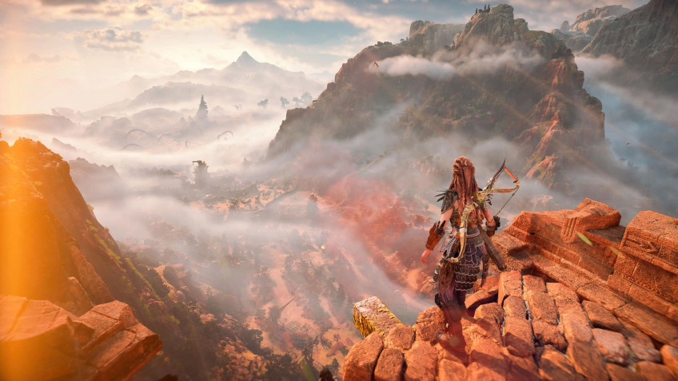

Digital Foundry назвала Horizon Forbidden West игрой с лучшей графикой в 2022 году

Технологический ресурс Digital Foundry, как и многие другие, подводит итоги 2022 года. И журналисты издания уже назвали игру с лучшей графикой. Ею стала Horizon Forbidden West, сиквел популярной Horizon Zero Dawn.
На втором и третьем месте оказались The Callisto Protocol и Portal RTX. А всего на признание Digital Foundry претендовало десять проектов. Среди них — The Witcher 3: Wild Hunt — Complete Edition, Need for Speed Unbound, Fortnite, Plague Tale: Requiem, The Last of Us Part I и Gran Turismo 7.
Помимо этого, журналисты учредили дополнительную призовую категорию и тут же назвали её лауреата. Так уж сложилось, что в 2022 году вышло несколько игр со словом West в названии: Evil West, Weird West, Hard West 2. И лучшей в категории The Best of the West назвали Weird West. К слову, в 2023 году нас ждёт ещё и Wild West Dynasty.